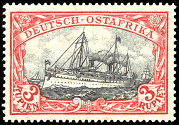

(The Germany History Network)

Inhaltsverzeichnis
(Table of Contents)
Afrika (Africa)
Deutsch Ostafrika (German East Africa)
Deutsch Südwestafrika (German South West Africa)
Kamerun (Cameroun)
Togo
(Togoland)
Südwärts Pazifik (South Pacific)
Deutsch Neu-Guinea
(German New Guinea)
Karolinen (Caroline)
Marianen Inseln (Mariana Islands)
Marshall Inseln (Marshall Islands)
Samoa
China
Kiautschou
You Are Our Visitor Since 14 October 2004
This Page was Last Updated